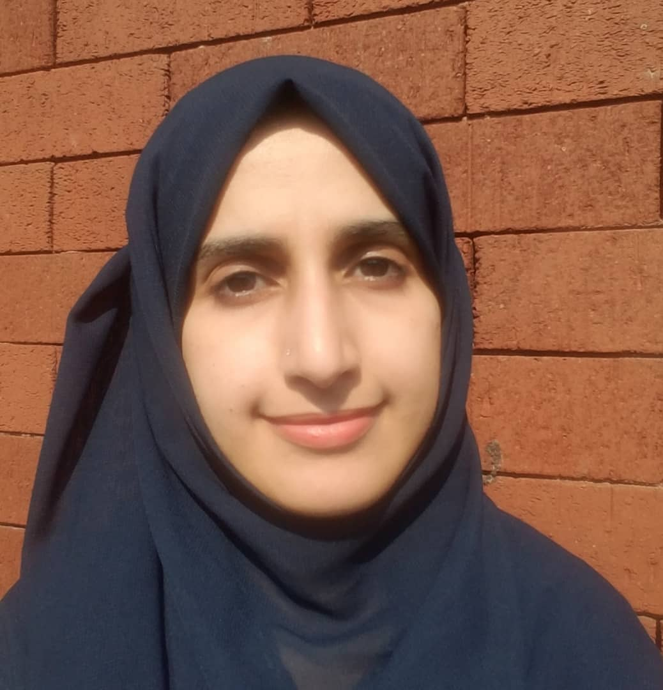

FATMA HAMEED AHMED
- Address: Burg. Ritmeesterweg 20, 1784 NV
Den Helder, Netherlands - Phone Number: +31 6 85472809
- Email: fatma78hameed@gmail.com
Program Manager with over 5 years of experience in development department for local and international organization specialized in implementation of humanitarian response and development programs and projects designed for communities in conflict and developing countries. I can implement of strategies and activities. I have a great interest in technologies and innovations. In addition, I have creative ideas and excellent analytical skills. My greatest strength is that I am a fast learner with a high commitment to learning.
Education
- Graduate student (Master in International Development & Gender) / Gender- Development Research& Studies Center / Sana'a University/ Yemen.
- Bachelor degree in dentistry / Faculty of Dentistry / Sana'a University/ Yemen
Work Experience
Gender Program Officer; Women and Peacebuilding
Oxfam GB, Yemen
- Play a lead role in the assessment, design, implementation, monitoring and evaluation that attain the objectives of the Women and Peace building project.
- Ensure timely submission of quality donor reports in accordance to the Oxfam Donor Reporting Schedule (DRS) timelines.
- Involve with the gender coordinator and funding team to plan, proposal writing and budgeting of new WPS projects.
Protection and Gender Program Coordinator
National Foundation for Development and Humanitarian Response (NFDHR), Yemen
- Write protection projects proposals especially in emergency to Humanitarian Pooled Fund HPF
- Develop strategies for Protection and Gender Program
- Supervise, manage and provide technical support to protection teams in implementation protection projects
Protection and Gender Officer
NFDHR, Yemen
- Participate in the development of projects plan and activities
- Coordinate for the capacity building sessions held by NFDHR.
- Contribute in developing protection program via proposals writing.
Volunteer
NFDHR, Yemen
- Participate voluntarily in activities of NFDHR
- work any other assigned duties